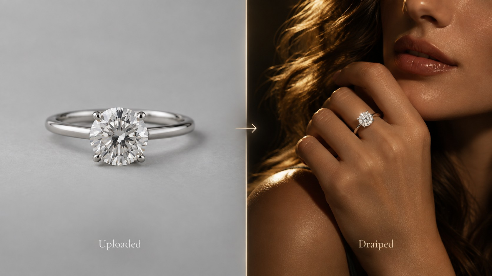

01 · AI creative studio
DRAIPED
AI creative studio for jewelers. Upload a product photo and get campaign-ready assets in minutes: on-model shots, Instagram carousels with copy, web banners for desktop and mobile, and listing images for 1stdibs and Shopify. One product shot becomes a full launch, built by someone who's spent years art-directing fine jewelry.
Livedraiped.com →